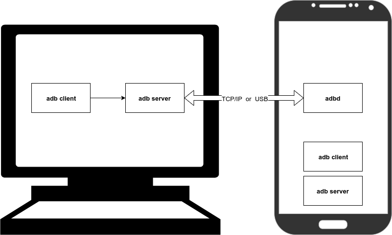
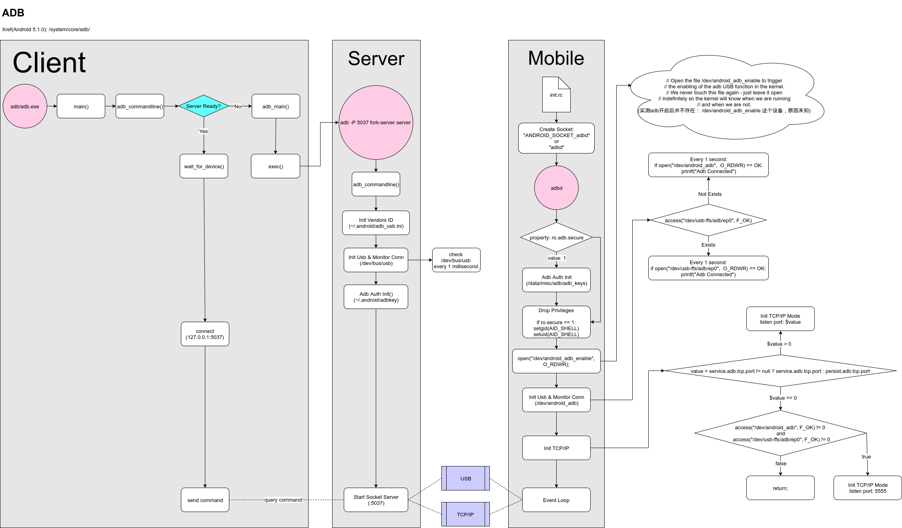
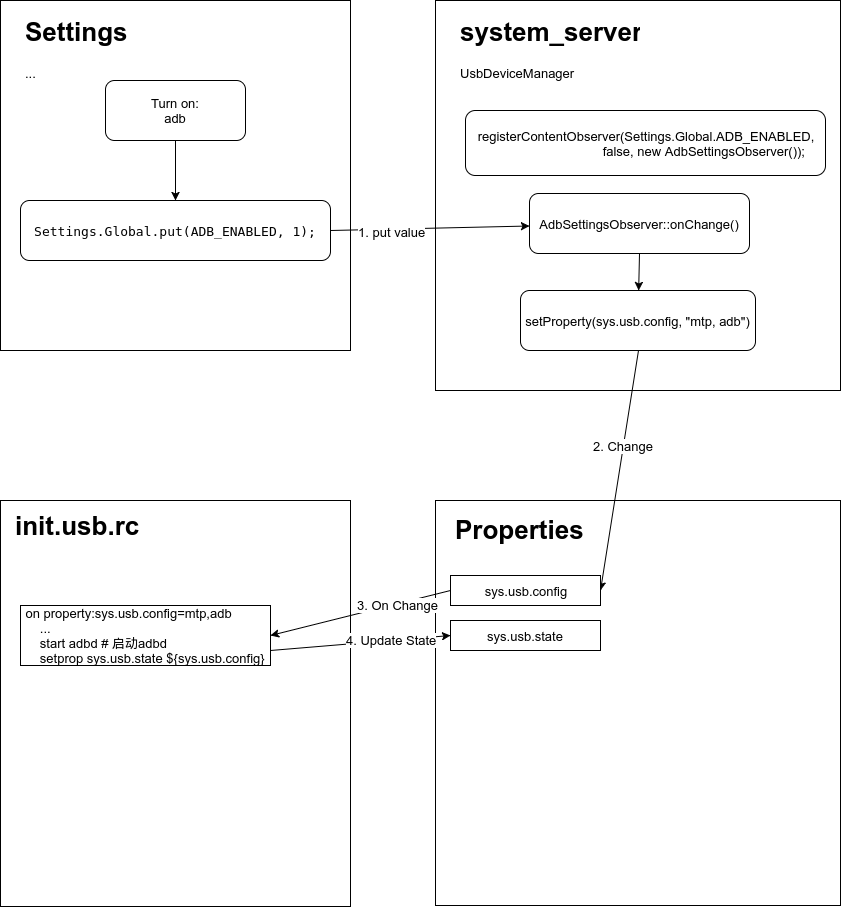
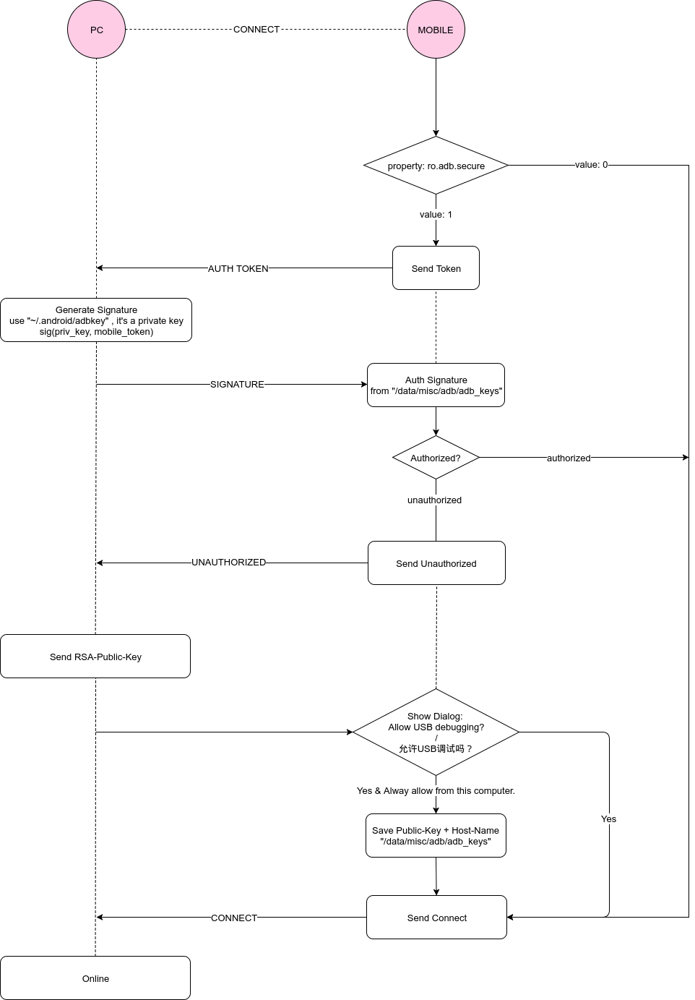
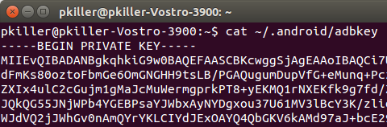
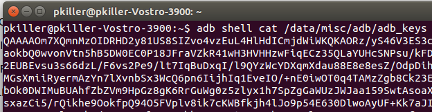
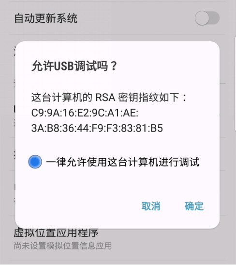
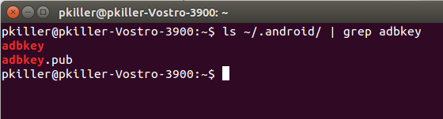

Android Adb 架构及实现分析
一、基本概念
Adb(Android-Debug-Bridge)是为了方便Host与目标Android设备通讯而出现的一种套件，支持USB与TCP/IP的通讯的方式。Adb分为三个端：Client & Server & Mobile。Adb的部分源代码是混在一起的，很多部分的功能可以重用，各端独立的逻辑使用预编译指令来分隔离。源码中通常使用预编译定义ADB_HOST来表示PC上的代码，其他#else块中表示Mobile代码，其他的表示为3端共享的代码。
在本文中我们将adb一共分为三部分，但实际上在Mobile中也包含adb, 即Client和Server端。也就是说可以使用Mobile调试Mobile。但是为了便于理解，不混淆概念故将其简化为Mobile和PC端。实际应当以HOST来表示adb也就是调试人员所使用的机器。源码中也会用HOST_ON_TARGET预编译定义来表示运行在Mobile设备中的adb(Server&Client).


A. PC端
Adb Server 与 Adb Client，二者为同一个binary文件即adb或adb.exe，通过启动参数来区分角色. Server为Client提供服务的端口为： 5037(PC端) 或 5038(Mobile端).
B. Mobile端
Adbd，提供最终的adb命令实现.
C. 连接模式
分为两种:
- USB模式, PC通过USB与Mobile通讯. 模式依据：Mobile中
service.adb.tcp.port值为0 (property) - TCP/IP模式, PC通过tcp/ip与Mobile进行通讯. 模式依据：Mobile中
service.adb.tcp.port值为port number (property)
二、基本用法
A. 切换为TCP/IP模式
切换为TCP/IP模式：
adb tcpip 6666 # 将当前已连接USB上的Mobile端切换为TCP/IP模式，以6666端口进行监听.
切换后，断开USB链接，并使用TCP/IP重新连接设备：
adb kill-server
adb connect 192.168.125.236:6666
三、Android中相关的property
A. adbd是否拥有ROOT权限
/xbin/adbd文件拥有s标志位, 所以默认以root权限启动的，启动后会根据Propterty值决定是否降权到SHELL权限。
相关Property: ro.secure & ro.debuggable & service.adb.root
adbd决定是否降权到shell的逻辑：
# 伪代码
if ro.secure==1 && (ro.debuggable==0 || service.adb.root==0)
{
# drop privileges
setgid(AID_SHELL);
setuid(AID_SHELL);
}
以下是源码中判断降权的逻辑：
# xref: /system/core/adb/adb.c
int adb_main(int is_daemon, int server_port) {
// ...
/* don't listen on a port (default 5037) if running in secure mode */
/* don't run as root if we are running in secure mode */
if (should_drop_privileges()) {
drop_capabilities_bounding_set_if_needed();
// -------------降权----------------
/* then switch user and group to "shell" */
if (setgid(AID_SHELL) != 0) {
exit(1);
}
if (setuid(AID_SHELL) != 0) {
exit(1);
}
D("Local port disabled\n");
} else {
// ...
}
static int should_drop_privileges() {
#ifndef ALLOW_ADBD_ROOT
return 1;
#else /* ALLOW_ADBD_ROOT */
int secure = 0;
char value[PROPERTY_VALUE_MAX];
/* run adbd in secure mode if ro.secure is set and
** we are not in the emulator
*/
property_get("ro.kernel.qemu", value, "");
if (strcmp(value, "1") != 0) {
property_get("ro.secure", value, "1");
if (strcmp(value, "1") == 0) {
// don't run as root if ro.secure is set...
secure = 1;
// ... except we allow running as root in userdebug builds if the
// service.adb.root property has been set by the "adb root" command
property_get("ro.debuggable", value, "");
if (strcmp(value, "1") == 0) {
property_get("service.adb.root", value, "");
if (strcmp(value, "1") == 0) {
secure = 0;
}
}
}
}
return secure;
#endif /* ALLOW_ADBD_ROOT */
}
#endif /* !ADB_HOST */
B. adb连接时，是否需要进行需要用户授权验证
相关Property: ro.adb.secure
允许USB调试吗？
这台计算机的RSA密钥指纹如下: 23:B2:47:E1:08:DE:5A:3B:58:5A:A5:A6:FA:98:E0:50
一律允许使用这台计算机进行调试
- 1: 需要授权
- 0: 不需要
C. adb的连接模式
相关Property: service.adb.tcp.port、persist.adb.tcp.port
adbd以何种模式进行工作：
- 为0: 以USB模式工作
- 不为0: 以TCP/IP模式工作, 并且此值作为监听端口
adb决定使用TCP/IP模式的逻辑：
# 伪代码
if (service.adb.tcp.port != null ? service.adb.tcp.port : persist.adb.tcp.port) > 0
{
# it's tcp/ip mode.
}
以下是源码中选择模式的逻辑：
// xref: /system/core/adb/adb.c
int adb_main(int is_daemon, int server_port)
{
// ...
int usb = 0;
// 当存在/dev/android_adb或/dev/usb-ffs/adb/ep0时, 先预设为USB模式
if (access(USB_ADB_PATH, F_OK) == 0 || access(USB_FFS_ADB_EP0, F_OK) == 0) {
// listen on USB
usb_init();
usb = 1;
}
// 若port不为0，则使用TCP/IP模式，否则维持USB模式.
// If one of these properties is set, also listen on that port
// If one of the properties isn't set and we couldn't listen on usb,
// listen on the default port.
property_get("service.adb.tcp.port", value, "");
if (!value[0]) {
property_get("persist.adb.tcp.port", value, "");
}
if (sscanf(value, "%d", &port) == 1 && port > 0) {
printf("using port=%d\n", port);
// listen on TCP port specified by service.adb.tcp.port property
local_init(port);
} else if (!usb) {
// listen on default port
local_init(DEFAULT_ADB_LOCAL_TRANSPORT_PORT);
}
// ...
}
D. Adbd 是否运行中
相关Property: init.svc.adbd
例子：
[init.svc.adbd]: [running]
E. Adb是否被打开
相关Property: sys.usb.state
例子：
[sys.usb.state]: [mtp,adb]
该项显示了usb上所有支持的功能，以逗号分割。如上如果adb打开，则会出现adb字样
四、Adb的开启/关闭
在Android中，当Mobile通过USB连接到PC后，到底开启哪些功能(如：adbd、midi、mtp等) 都是由UsbDeviceManager来做总控的。而UsbDeviceManager对这些功能控制的方式就是通过修改property。adbd会根据相关preoperty项作出相应操作，从而决定是否被打开。那么adbd是如何响应property的更改呢？ 这主要依赖init.usb.rc或init.*.usb.rc在一开机就注册好的property事件，当指定的property项如sys.usb.config的值被设为mtp,usb时，就会触发启动adbd的命令。

首先介绍打开adb的大体流程：
- 流程从Settings开始，在“开发者选项”中点击打开“USB调试”选项打开。
- Settings将
Settings.Global.DEVELOPMENT_SETTINGS_ENABLED配置更新到Preference，并最后调用回调广而告之。 - 此时运行于system_server进程中的UsbDeviceManager收到了ADB_ENABLE被修改的事件后，马上进行更新property: sys.usb.config的值，假如原value为“mtp”，更新完成后变为"mtp, adb”。
- 此时init.usb.rc进程收到property被修改的事件，立刻执行预设好的shell命令(如上图中的"start adbd”)。最后更新sys.usb.state的值，使之与sys.usb.state相同，表明所有任务已完成。
以下是UsbDeviceManager之后开始的详细代码流程：
在Settings中，控制adb开关都是通过framework.jar中的UsbManager::setCurrentFunction()达成的，最后会通过Binder调用至system_server中的UsbService::setCurrentFunction()。
1. 如果此时adb已为开启状态，就认为本次的调用目的是为了关闭adb()。如果为关闭状态，就认为本次是为了打开adb:
xref: /frameworks/base/services/usb/java/com/android/server/usb/UsbDeviceManager.java
private void setEnabledFunctions(String functions, boolean makeDefault) {
// ...
if (mAdbEnabled) {
functions = addFunction(functions, UsbManager.USB_FUNCTION_ADB);
} else {
functions = removeFunction(functions, UsbManager.USB_FUNCTION_ADB);
}
// ...
}
2. 假设目前为打开adb操作，在sys.usb.config值的尾部拼接”,adb”，并更新该property值:
// xref: /frameworks/base/services/usb/java/com/android/server/usb/UsbDeviceManager.java
private static String addFunction(String functions, String function) {
if ("none".equals(functions)) {
return function;
}
if (!containsFunction(functions, function)) {
if (functions.length() > 0) {
functions += ",";
}
functions += function;
}
return functions;
}
3. 然后开启线程，循环每隔50ms监控sys.usb.state的值是否与sys.usb.config相等了。(如果相等表明property修改的事件被成功响应了):
// xref: /frameworks/base/services/usb/java/com/android/server/usb/UsbDeviceManager.java
private boolean waitForState(String state) {
// wait for the transition to complete.
// give up after 1 second.
for (int i = 0; i < 20; i++) {
// State transition is done when sys.usb.state is set to the new configuration
if (state.equals(SystemProperties.get("sys.usb.state"))) return true;
SystemClock.sleep(50);
}
Slog.e(TAG, "waitForState(" + state + ") FAILED");
return false;
}
4. 然后流程来到init.*.usb.rc中:
以下的脚本片段为其中的一段，大致含义之当propertysys.usb.config的值为"mtp,adb"时，触发以下块内的脚本
on property:sys.usb.config=mtp,adb
write /sys/class/android_usb/android0/enable 0
write /sys/class/android_usb/android0/idVendor 18D1 # 设置厂商ID，以便PC端可以正常识别
write /sys/class/android_usb/android0/idProduct 4EE2
write /sys/class/android_usb/android0/bDeviceClass 0
write /sys/class/android_usb/android0/bDeviceSubClass 0
write /sys/class/android_usb/android0/bDeviceProtocol 0
write /sys/class/android_usb/android0/functions mtp,adb
write /sys/class/android_usb/android0/enable 1
start adbd # 启动adbd
setprop sys.usb.state ${sys.usb.config} # 最后更新当前usb的状态值
以上就是adb的开关原理，主要是依赖于init脚本的事件来实现。
五、Adbd 与 Server 的授权过程

-
当Mobile插入PC后，双方检测到Adb连接发生：
-
1.Mobile向PC发送随机
AUTH TOKEN -
2.PC收到
AUTH TOKEN后使用私钥(~/.android/adbkey)对Token计算SIGNATURE, 并计算Tokne的SHA-1，将结果发回Mobile.

- 3.Mobile根据PC名检查是否
保存过/授权过PC的公钥(从/data/misc/adb/adb_keys中读取已保存的授权)。如果已授权过，流程直接跳到第7步。否则到下一步进行新授权.

- 4.Mobile发送
UNAUTHORIZED到PC - 5.PC收到
UNAUTHORIZED后将RSA PUBLICKEY(~/.android/adbkey.pub)发往Mobile - 6.Mobile收到新的
RSA PUBLICKEY后计算HASH，并弹出允许USB调试吗？的对话框请求用户允许，进行下一步，否则流程终止/连接失败 - 7.Mobile向PC发送
ONLINE状态，双方授权验证完成，连接成功


六、PC端Adb Server流程
- Adb Server在首次调用Adb命令的时候被启动， Adb Client与Adb Server共用一个binary文件，由参数区分角色(Client/Server)。
- Adb Server由Adb Client通过命令
adb -P 5037 fork-server server进行启动(默认的Adb Server监听端口为5037)。
A. Adb Server 启动流程
// xref: /system/core/adb/commandline.c
int adb_main(int is_daemon, int server_port)
{
#if ADB_HOST
// 在PC上运行的ADB流程
usb_vendors_init(); // 初始化各手机厂商的vendor id号， 以便adb能从已插入的usb设备中识别出手机
usb_init(); // 开启对usb设备的监控(每隔1ms遍历一次/dev/bus/usb)
local_init(DEFAULT_ADB_LOCAL_TRANSPORT_PORT); // 首次尝试连接本地的Android模拟器(向localhost:5555端口发起链接)， #define DEFAULT_ADB_LOCAL_TRANSPORT_PORT 5555
adb_auth_init(); // 初始化公钥文件，
char local_name[30];
build_local_name(local_name, sizeof(local_name), server_port);
if(install_listener(local_name, "*smartsocket*", NULL, 0)) {
exit(1);
}
#else
// ...
}
1. 初始化各厂商手机的USB的Vender ID号，除了内置了一批常见ID外，还会从~/.android/adb_usb.ini读取，以便用户添加不常见的设备。
如下， 内置的一批Vendor ID
// xref: /system/core/adb/usb_vendors.c
/* Keep the list below sorted alphabetically by #define name */
// Acer's USB Vendor ID
#define VENDOR_ID_ACER 0x0502
// Allwinner's USB Vendor ID
#define VENDOR_ID_ALLWINNER 0x1F3A
// Amlogic's USB Vendor ID
#define VENDOR_ID_AMLOGIC 0x1b8e
// AnyDATA's USB Vendor ID
#define VENDOR_ID_ANYDATA 0x16D5
// Archos's USB Vendor ID
#define VENDOR_ID_ARCHOS 0x0E79
// Asus's USB Vendor ID
#define VENDOR_ID_ASUS 0x0b05
// BYD's USB Vendor ID
#define VENDOR_ID_BYD 0x1D91
// Compal's USB Vendor ID
#define VENDOR_ID_COMPAL 0x04B7
// Compalcomm's USB Vendor ID
#define VENDOR_ID_COMPALCOMM 0x1219
// Dell's USB Vendor ID
#define VENDOR_ID_DELL 0x413c
// ECS's USB Vendor ID
#define VENDOR_ID_ECS 0x03fc
// EMERGING_TECH's USB Vendor ID
#define VENDOR_ID_EMERGING_TECH 0x297F
// Emerson's USB Vendor ID
#define VENDOR_ID_EMERSON 0x2207
// Foxconn's USB Vendor ID
#define VENDOR_ID_FOXCONN 0x0489
// Fujitsu's USB Vendor ID
#define VENDOR_ID_FUJITSU 0x04C5
// Funai's USB Vendor ID
#define VENDOR_ID_FUNAI 0x0F1C
// Garmin-Asus's USB Vendor ID
#define VENDOR_ID_GARMIN_ASUS 0x091E
// Gigabyte's USB Vendor ID
#define VENDOR_ID_GIGABYTE 0x0414
// Gigaset's USB Vendor ID
#define VENDOR_ID_GIGASET 0x1E85
// GIONEE's USB Vendor ID
#define VENDOR_ID_GIONEE 0x271D
// Google's USB Vendor ID
#define VENDOR_ID_GOOGLE 0x18d1
// Haier's USB Vendor ID
#define VENDOR_ID_HAIER 0x201E
// Harris's USB Vendor ID
#define VENDOR_ID_HARRIS 0x19A5
// Hisense's USB Vendor ID
#define VENDOR_ID_HISENSE 0x109b
// Honeywell's USB Vendor ID
#define VENDOR_ID_HONEYWELL 0x0c2e
// HP's USB Vendor ID
#define VENDOR_ID_HP 0x03f0
// HTC's USB Vendor ID
#define VENDOR_ID_HTC 0x0bb4
// Huawei's USB Vendor ID
#define VENDOR_ID_HUAWEI 0x12D1
// INQ Mobile's USB Vendor ID
#define VENDOR_ID_INQ_MOBILE 0x2314
// Intel's USB Vendor ID
#define VENDOR_ID_INTEL 0x8087
// Intermec's USB Vendor ID
#define VENDOR_ID_INTERMEC 0x067e
// IRiver's USB Vendor ID
#define VENDOR_ID_IRIVER 0x2420
// K-Touch's USB Vendor ID
#define VENDOR_ID_K_TOUCH 0x24E3
// KT Tech's USB Vendor ID
#define VENDOR_ID_KT_TECH 0x2116
// Kobo's USB Vendor ID
#define VENDOR_ID_KOBO 0x2237
// Kyocera's USB Vendor ID
#define VENDOR_ID_KYOCERA 0x0482
// Lab126's USB Vendor ID
#define VENDOR_ID_LAB126 0x1949
// Lenovo's USB Vendor ID
#define VENDOR_ID_LENOVO 0x17EF
// LenovoMobile's USB Vendor ID
#define VENDOR_ID_LENOVOMOBILE 0x2006
// LG's USB Vendor ID
#define VENDOR_ID_LGE 0x1004
// Lumigon's USB Vendor ID
#define VENDOR_ID_LUMIGON 0x25E3
// Motorola's USB Vendor ID
#define VENDOR_ID_MOTOROLA 0x22b8
// MSI's USB Vendor ID
#define VENDOR_ID_MSI 0x0DB0
// MTK's USB Vendor ID
#define VENDOR_ID_MTK 0x0e8d
// NEC's USB Vendor ID
#define VENDOR_ID_NEC 0x0409
// B&N Nook's USB Vendor ID
#define VENDOR_ID_NOOK 0x2080
// Nvidia's USB Vendor ID
#define VENDOR_ID_NVIDIA 0x0955
// OPPO's USB Vendor ID
#define VENDOR_ID_OPPO 0x22D9
// On-The-Go-Video's USB Vendor ID
#define VENDOR_ID_OTGV 0x2257
// OUYA's USB Vendor ID
#define VENDOR_ID_OUYA 0x2836
// Pantech's USB Vendor ID
#define VENDOR_ID_PANTECH 0x10A9
// Pegatron's USB Vendor ID
#define VENDOR_ID_PEGATRON 0x1D4D
// Philips's USB Vendor ID
#define VENDOR_ID_PHILIPS 0x0471
// Panasonic Mobile Communication's USB Vendor ID
#define VENDOR_ID_PMC 0x04DA
// Positivo's USB Vendor ID
#define VENDOR_ID_POSITIVO 0x1662
// Prestigio's USB Vendor ID
#define VENDOR_ID_PRESTIGIO 0x29e4
// Qisda's USB Vendor ID
#define VENDOR_ID_QISDA 0x1D45
// Qualcomm's USB Vendor ID
#define VENDOR_ID_QUALCOMM 0x05c6
// Quanta's USB Vendor ID
#define VENDOR_ID_QUANTA 0x0408
// Rockchip's USB Vendor ID
#define VENDOR_ID_ROCKCHIP 0x2207
// Samsung's USB Vendor ID
#define VENDOR_ID_SAMSUNG 0x04e8
// Sharp's USB Vendor ID
#define VENDOR_ID_SHARP 0x04dd
// SK Telesys's USB Vendor ID
#define VENDOR_ID_SK_TELESYS 0x1F53
// Smartisan's USB Vendor ID
#define VENDOR_ID_SMARTISAN 0x29a9
// Sony's USB Vendor ID
#define VENDOR_ID_SONY 0x054C
// Sony Ericsson's USB Vendor ID
#define VENDOR_ID_SONY_ERICSSON 0x0FCE
// T & A Mobile Phones' USB Vendor ID
#define VENDOR_ID_T_AND_A 0x1BBB
// TechFaith's USB Vendor ID
#define VENDOR_ID_TECHFAITH 0x1d09
// Teleepoch's USB Vendor ID
#define VENDOR_ID_TELEEPOCH 0x2340
// Texas Instruments's USB Vendor ID
#define VENDOR_ID_TI 0x0451
// Toshiba's USB Vendor ID
#define VENDOR_ID_TOSHIBA 0x0930
// Unowhy's USB Vendor ID
#define VENDOR_ID_UNOWHY 0x2A49
// Vizio's USB Vendor ID
#define VENDOR_ID_VIZIO 0xE040
// Wacom's USB Vendor ID
#define VENDOR_ID_WACOM 0x0531
// Xiaomi's USB Vendor ID
#define VENDOR_ID_XIAOMI 0x2717
// YotaDevices's USB Vendor ID
#define VENDOR_ID_YOTADEVICES 0x2916
// Yulong Coolpad's USB Vendor ID
#define VENDOR_ID_YULONG_COOLPAD 0x1EBF
// ZTE's USB Vendor ID
#define VENDOR_ID_ZTE 0x19D2
/* Keep the list above sorted alphabetically by #define name */
2. 启动新线程，监控usb中出现的手机：
每隔1秒，从/dev/bus/usb扫描一次新增的USB设备.
// xref: /system/core/adb/usb_linux.c
void* device_poll_thread(void* unused)
{
D("Created device thread\n");
for(;;) {
/* XXX use inotify */
find_usb_device("/dev/bus/usb", register_device); //每隔1秒， 扫描一次新增USB设备
kick_disconnected_devices();
sleep(1);
}
return NULL;
}
static void find_usb_device(const char *base,
void (*register_device_callback)
(const char *, const char *, unsigned char, unsigned char, int, int, unsigned))
{
char busname[32], devname[32];
unsigned char local_ep_in, local_ep_out;
DIR *busdir , *devdir ;
struct dirent *de;
int fd ;
busdir = opendir(base);
if(busdir == 0) return;
while((de = readdir(busdir)) != 0) {
if(badname(de->d_name)) continue;
snprintf(busname, sizeof busname, "%s/%s", base, de->d_name);
devdir = opendir(busname);
if(devdir == 0) continue;
// DBGX("[ scanning %s ]\n", busname);
while((de = readdir(devdir))) {
unsigned char devdesc[4096];
unsigned char* bufptr = devdesc;
unsigned char* bufend;
struct usb_device_descriptor* device;
struct usb_config_descriptor* config;
struct usb_interface_descriptor* interface;
struct usb_endpoint_descriptor *ep1, *ep2;
unsigned zero_mask = 0;
unsigned vid, pid;
size_t desclength;
// ...
}
3、初始化adb的public key，以便后续与手机进行授权握手：
// xref: /system/core/adb/adb_auth_host.c
static int get_user_keyfilepath(char *filename, size_t len)
{
const char *format, *home;
char android_dir[PATH_MAX];
struct stat buf;
#ifdef _WIN32
char path[PATH_MAX];
home = getenv("ANDROID_SDK_HOME");
if (!home) {
SHGetFolderPath(NULL, CSIDL_PROFILE, NULL, 0, path);
home = path;
}
format = "%s\\%s";
#else
home = getenv("HOME");
if (!home)
return -1;
format = "%s/%s";
#endif
D("home '%s'\n", home);
if (snprintf(android_dir, sizeof(android_dir), format, home,
ANDROID_PATH) >= (int)sizeof(android_dir))
return -1;
if (stat(android_dir, &buf)) {
if (adb_mkdir(android_dir, 0750) < 0) {
D("Cannot mkdir '%s'", android_dir);
return -1;
}
}
// 拼接得出～/.android/adbkey
return snprintf(filename, len, format, android_dir, ADB_KEY_FILE);
}
4、开启socket并开启事件循环，接受Client连接和发来的命令.
// xref: /system/core/adb/fdevent.c
void fdevent_loop()
{
fdevent *fde;
fdevent_subproc_setup();
for(;;) {
D("--- ---- waiting for events\n");
fdevent_process();
while((fde = fdevent_plist_dequeue())) {
fdevent_call_fdfunc(fde);
}
}
}
七、Mobile端Adbd流程
1. adbd是由init进程启动，启动方式在init.rc中定义：
- 首先init会帮忙创建一个名为adbd的unix socket(system system)
- 然后启动adbd进程，并且将上面的socket传给adbd进程
// xref: init.rc
service adbd /sbin/adbd --root_seclabel=u:r:su:s0 --device_banner=recovery
disabled
socket adbd stream 660 system system
seclabel u:r:adbd:s0
2. adbd启动后，读取ro.adb.secure，决定是否要求PC进行PublicKey+Token认证.
- 为1表示需要认证后，才能建立连接
- 为0表示不需要认证，直接可以建立链接
// xref: /system/core/adb/adb.c
int adb_main(int is_daemon, int server_port)
{
// ...
property_get("ro.adb.secure", value, "0");
auth_enabled = !strcmp(value, "1");
if (auth_enabled)
adb_auth_init();
// ...
}
3. 读取ro.secure，决定是否需要将自身进程降权到SHELL权限(adbd以root权限启动)
- 为1, 降权到SHELL权限
- 为0, 不需要降权
// xref: /system/core/adb/adb.c
int adb_main(int is_daemon, int server_port)
{
/* don't listen on a port (default 5037) if running in secure mode */
/* don't run as root if we are running in secure mode */
if (should_drop_privileges()) { // 内部依据`ro.secure`
drop_capabilities_bounding_set_if_needed();
/* then switch user and group to "shell" */
if (setgid(AID_SHELL) != 0) {
exit(1);
}
if (setuid(AID_SHELL) != 0) {
exit(1);
}
D("Local port disabled\n");
} else {
// ...
}
4. 开启线程监控 /dev/android_adb或/dev/usb-ffs/adb/ep0 , 监控adb的连接：
// xref: /system/core/adb/usb_linux_client.c
static void *usb_adb_open_thread(void *x)
{
struct usb_handle *usb = (struct usb_handle *)x;
int fd;
while (1) {
// wait until the USB device needs opening
adb_mutex_lock(&usb->lock);
while (usb->fd != -1)
adb_cond_wait(&usb->notify, &usb->lock);
adb_mutex_unlock(&usb->lock);
D("[ usb_thread - opening device ]\n");
do {
/* XXX use inotify? */
fd = unix_open("/dev/android_adb", O_RDWR); // 尝试打开，如果成功，认为adb被连接
if (fd < 0) {
// to support older kernels
fd = unix_open("/dev/android", O_RDWR);
}
if (fd < 0) {
adb_sleep_ms(1000);
}
} while (fd < 0);
D("[ opening device succeeded ]\n");
close_on_exec(fd);
usb->fd = fd;
D("[ usb_thread - registering device ]\n");
register_usb_transport(usb, 0, 0, 1);
}
// never gets here
return 0;
}
5. 检查service.adb.tcp.port， 是否需要开启TCP/IP连接模式：
- 不为0, 则开启TCP/IP模式，并且以此值作为监听的端口号.
- 为0, 则不开启.
// xref: /system/core/adb/adb.c
int adb_main(int is_daemon, int server_port)
{
// ...
// If one of these properties is set, also listen on that port
// If one of the properties isn't set and we couldn't listen on usb,
// listen on the default port.
property_get("service.adb.tcp.port", value, "");
if (!value[0]) {
property_get("persist.adb.tcp.port", value, "");
}
if (sscanf(value, "%d", &port) == 1 && port > 0) {
printf("using port=%d\n", port);
// listen on TCP port specified by service.adb.tcp.port property
local_init(port); // 开启TCP/IP模式
} else if (!usb) {
// listen on default port
local_init(DEFAULT_ADB_LOCAL_TRANSPORT_PORT);
}
// ...
}
6、开启socket并开启事件循环，接受Client连接和发来的命令.
// xref: /system/core/adb/fdevent.c
void fdevent_loop()
{
fdevent *fde;
fdevent_subproc_setup();
for(;;) {
D("--- ---- waiting for events\n");
fdevent_process();
while((fde = fdevent_plist_dequeue())) {
fdevent_call_fdfunc(fde);
}
}
}
八、总结
总而言之，Adb就是为了方便Host与目标Android设备通讯而出现的一种套件。 USB与TCP/IP只是其通讯的一种方式。另外本文没有阐述的forward与jdwp的通讯本质就是一种TCP代理，所以没有涉及。另外根据本次分析过程里意外得到的灵感中还衍生出几个Adb定制的项目，作为本次分析的#TODO，便于以后的adb封紧及双域分析的分析。
九、FAQ
1. 如何使用TCP/IP模式连接ADB
使用TCP/IP模式的方法分为两种：
第一种 连接adb后在PC上切换
详见上文中二、基本用法中的A. 切换为TCP/IP模式
第二种 使设备天然支持TCP/IP模式
详见上文中三、Android中跟Adb相关的property中的C. adb的连接模式
2. 如何让adb不验证公钥证书而允许所有PC直接连接
详见上问中三、Android中跟Adb相关的property中的adb连接时，是否需要进行需要用户授权验证
3. 如何让adb只允许指定的机器/PublicKey连接
目前没有发现可直接通过property或其他Config配置的方法，但可以通过修改代码+增加配置实现：
1. 禁止询问用户调试授权：
调试授权：adb原生逻辑中，当TOKEN验证失败后，PC会重发PUBLICKEY给Mobile，尝试重新建立授权。
对代码修改，不再允许申请调试授权！
// xref: /system/core/adb/adb.c
void handle_packet(apacket *p, atransport *t)
{
asocket *s;
// ...
case A_AUTH:
if (p->msg.arg0 == ADB_AUTH_TOKEN) {
t->connection_state = CS_UNAUTHORIZED;
t->key = adb_auth_nextkey(t->key);
if (t->key) {
send_auth_response(p->data, p->msg.data_length, t);
} else {
/* No more private keys to try, send the public key */
send_auth_publickey(t);
}
} else if (p->msg.arg0 == ADB_AUTH_SIGNATURE) {
if (adb_auth_verify(t->token, p->data, p->msg.data_length)) {
adb_auth_verified(t);
t->failed_auth_attempts = 0;
} else {
if (t->failed_auth_attempts++ > 10)
adb_sleep_ms(1000);
send_auth_request(t);
}
} else if (p->msg.arg0 == ADB_AUTH_RSAPUBLICKEY) {
adb_auth_confirm_key(p->data, p->msg.data_length, t); // 此处为收到PC发来的PUBLICKEY，对其计算后向用户询问是否同意授权(弹出：允许USB调试吗？)。所以注释掉此处代码。
}
break;
// ...
}
put_apacket(p);
}
2. 在/data/misc/adb/adb_keys中只保留允许连接的PC的PublicKey
3. 最后确保ro.adb.secure为1
4. 禁用Adb的各种思路
关于adb的开启/关闭原理可以通过五、adb的开启/关闭了解，从该节可以了解到，adb的开启关闭最终依赖init脚本中的事件功能来实现。
沿着这条流程，可以生出很多种禁掉adb的方式，下面就一一列举几条(只提供思路)：
- 对Settings做定制，在程序启动时直接调用
Settings.Global.putInt(getContentResolver(), Settings.Global.ADB_ENABLED, 0);来关闭ADB(最终实现还是通过设置sys.usb.config) - 对
UsbDeviceManager::addFunction()做修改，当参数functions为“adb”时，就直接返回，不进行下一步操作(不对property做修改)。 - 修改
init.*.usb.rc脚本，将其中包含adb条件的块删除，或做修改，使其不再对property值的变更作出响应。 - ….
5. 如何让多人访问一台设备
首先在USB连接了手机的电脑上开启service：
adb nodaemon server -a # -a 表示监听所有来路
然后在其他电脑上，指定host来执行命令即可：
adb -H 192.168.128.228 devices
十、结语
adb作为android系统的原生调试工具极大方便了开发者的调试，其生于android但并不专属于android。 得益于adb的优秀的跨平台能力和与系统低耦合的特性，其被移植到了很多基于unix、linux系统的IoT设备，也被安全定制后放入很多特种设备(不允许外部连接)，但由于系统开发人员对于adb了解不透彻、缺乏安全意识造成了很多的安全风险。在我进行的诸多安全服务项目中，由于adb阉割不完全或保护不当，最终导致各类保密设备、特种设备被攻破的案例屡见不鲜，所以作为一名合格的系统开发人员，完整掌握adb架构和实现绝对是必不可少的。